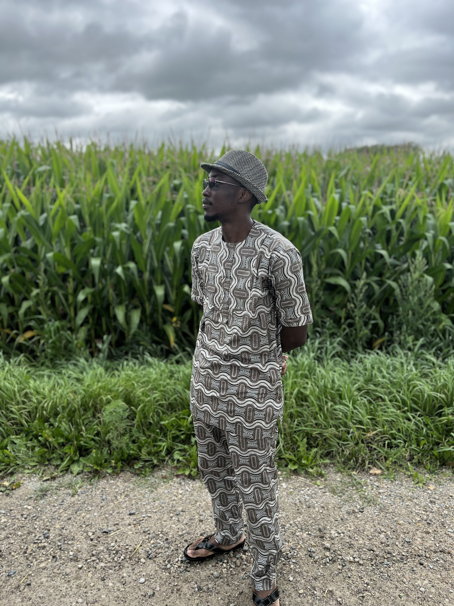

Tammy Kio

Skills and Qualifications:
- Excellent verbal and written communication skills
- Teamwork and collaboration, working independently with little supervision
- Effective problem-solving and time-management with strong attention to detail
- Eager to grow and improve by learning new skills and adapting to new work environments
- Quality and Safety conscious
- Ability to follow oral and written direction with accuracy and efficiency
- Hardworking with excellent manual dexterity
- Reliable
- Languages: Fluent English
Work Experience
Technical Account Associate, (contract), Larca Custom Machining, Cambridge, ON March 2023 - July 2023
- Work closely with the Senior Account Manager to service customer accounts from job quote through to shipment of completed manufactured parts
- Prepare workorders, gather customer drawings for production team
- Liaise with both and internal and external stakeholders to ensure that customer expectations are met, communicating any potential issues to Senior Account Manager
- Interpret blue print drawings and apply math skills to solve any problems
- Assist with labeling, preparation and facilitating the delivery of finished goods to customer
- Support Senior Account Manager with all communications relating to customer orders to both internal and external parties
- Accurately enter all order data into ERP system
- Control and maintain all customer information in ERP system
Mag Welding Operator, PWO Canada, Kitchener, ON Oct 2021 - Sep 2022
- Start up, shut down, adjust, and monitor robotic welding production line
- Troubleshoots problems with the assembly equipment if problems with production or with the quality of the finished part exist
- Sets up automated equipment and enters appropriate program into the computer to indicate welding process specifications required for production
- Assist with the maintenance and repair of welding equipment
- Documents set-up information, problems, information, and changes to set up procedures and improvements needed to the automated equipment
- Performs quality inspection of first-off and last-off products by checking specifications of desired product as per instructions
- Inspects parts routinely as required throughout production. Completes necessary paperwork to indicate inspections were done and the quality of the produced part
- Operate manual resistance welding equipment
Automotive Service Technician, Mr. Lube, Waterloo, ON June 2021 – Sep 2021
- Serviced customer cars for oil changes and preventative maintenance
- Diagnosed faults or malfunctions and confirmed findings with supervisor to determine whether to repair or replace unit
- Repaired or replaced mechanical units or components using hand and power tools
- Provided recommendations based on vehicle assessments
- Provided tire sales and tire services
- Topped up all fluids under the car hood
- Provided exceptional customer service for each customer
- Tested and adjusted units to specifications for proper performance
Education
Bachelor of Applied Science, Industrial Engineering, University of Windsor, ON Sept 2014 – May 2019
- Used research skills to collect and organize information for major projects
- Used Microsoft Office skills to deliver information through visual presentations and written reports
- Collaborated with colleagues, supervisors and research participants using professional written and verbal communication skills
Other Activities
- English Peer Tutor for High School Students, Hamilton, ON Fall 2011 – Spring 2012
- Press Club President, Christ College, Ogun, Nigeria Fall 2009 – Summer 2012
Hobbies